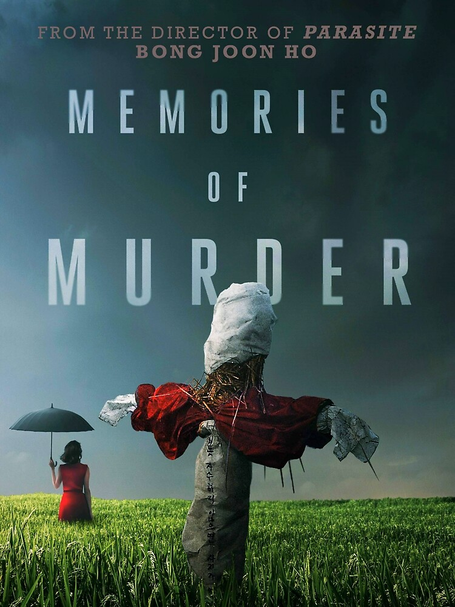
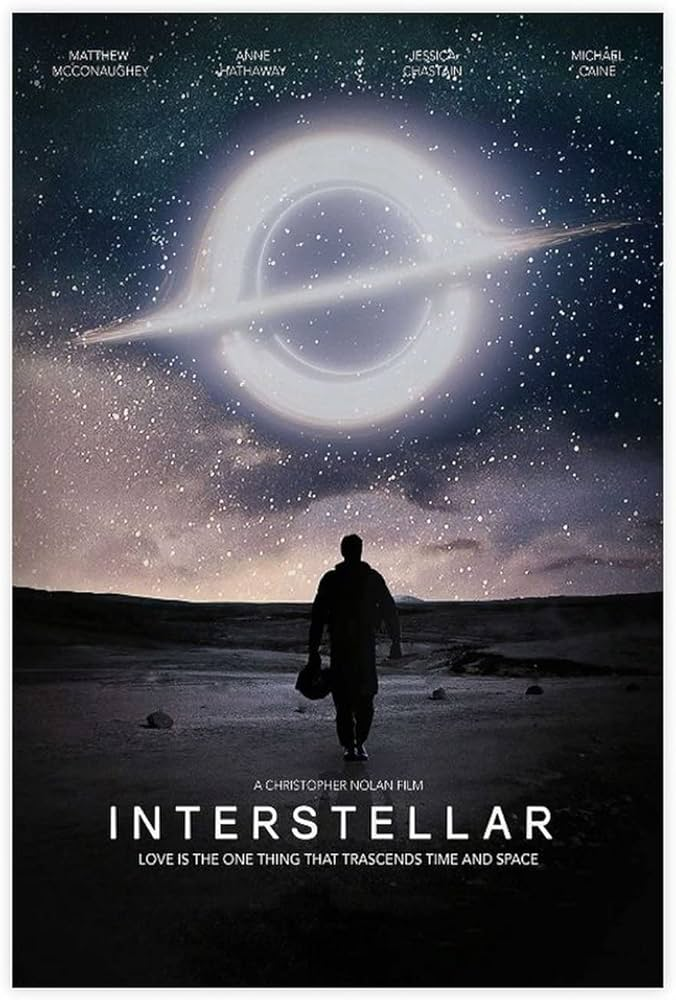
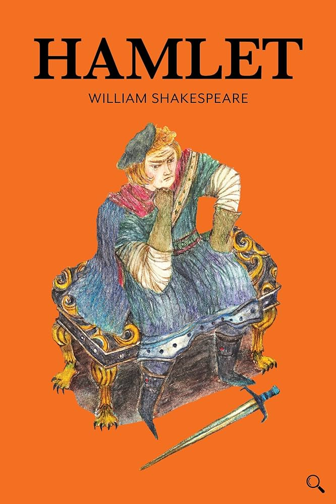
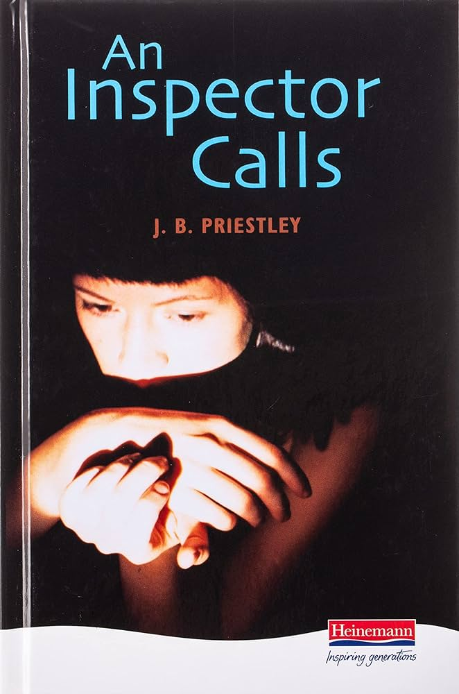
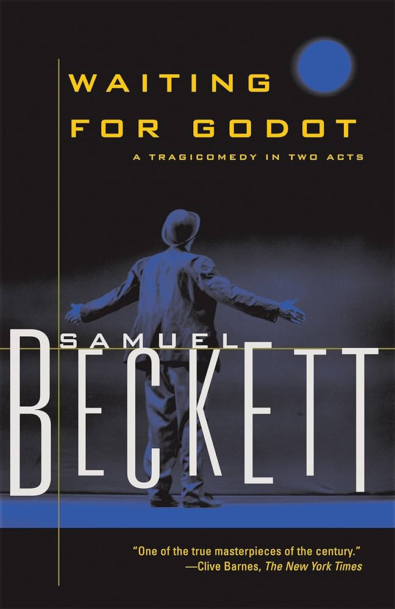
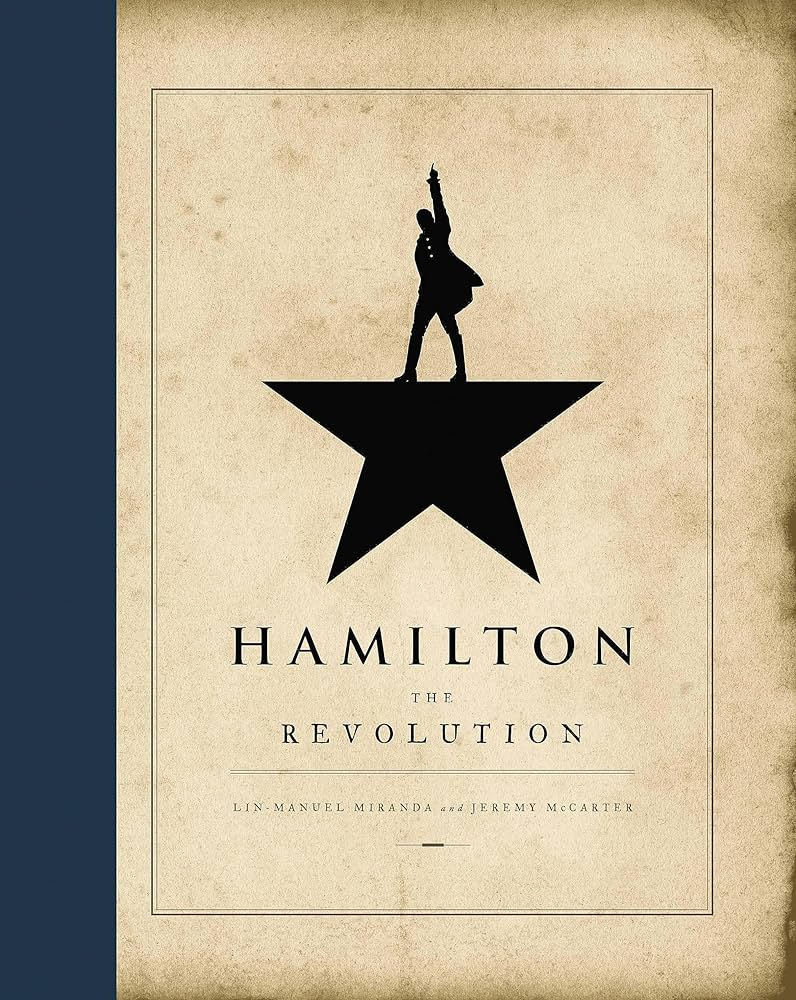
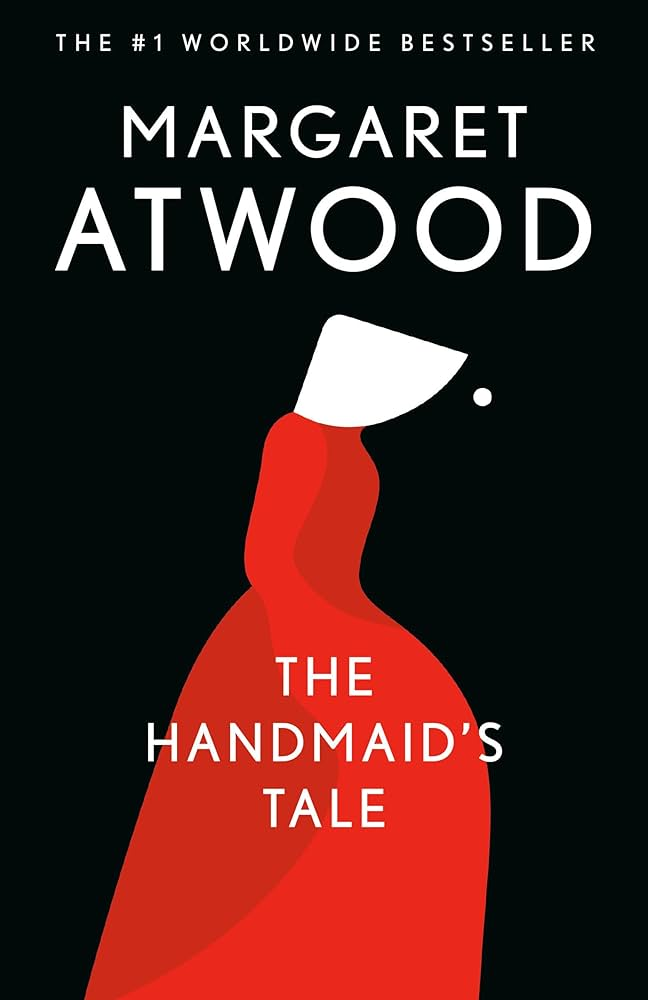
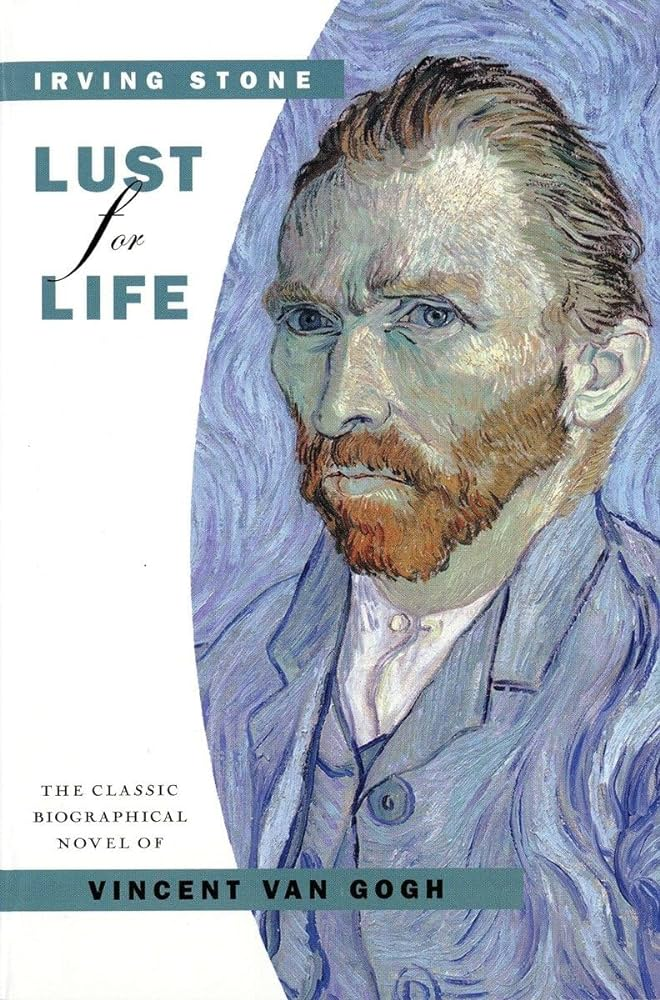

Interests
Movies
I love watching movies, both as a pastime hobby and something that's cathartic.

Spirited Away
A young girl wanders into a world ruled by gods, witches, and spirits.

Memories of Murder
In a small Korean province in 1986, two detectives struggle with the case of multiple young women being found murdered by an unknown culprit.

Cars
On the way to the biggest race of his life, a hotshot rookie race car gets stranded in a rundown town and learns that winning isn't everything in life.

Interstellar
Set in a future where a failing Earth puts humanity on the brink of extinction, it sees an intrepid team of NASA scientists, engineers and pilots attempt to find a new habitable planet, via interstellar travel.
Plays
The thrill of live performance is unmatched; I enjoy both watching and participating in theater.

Hamlet
The ghost of the King of Denmark tells his son Hamlet to avenge his murder by killing the new king, Hamlet's uncle. Hamlet feigns madness, contemplates life and death, and seeks revenge.

An Inspector Calls
A play that revolves around the apparent suicide of a young woman called Eva Smith. In the play, the unsuspecting Birling family are visited by the mysterious Inspector Goole.

Waiting for Godot
Waiting for Godot is about two men - Vladimir and Estragon - who are waiting for another man called Godot. Waiting for Godot is about the meaning of life and the absurdity of existence.

Hamilton
Hamilton is about the life and career of Alexander Hamilton, who immigrated from the Caribbean as a teenaged orphan, funded by people who were impressed with his writing.
Books
From fictional tales to profound non-fiction, reading is my escape into other realms.

The Handmaid's Tale
A dystopian novel about a woman's struggles in a totalitarian society where her identity, fertility and freedoms are suppressed.

The Hound of Baskervilles
Detective Holmes and his assistant, Dr. Watson (Nigel Bruce), are called to Baskerville Hall in the mist-covered moors of Dartmoor in southern England. A giant spectral hound reportedly stalks the premises and kills the estate's heirs out of vengeance for the death of a local peasant girl.

The Silent Patient
The story follows a famous artist named Alicia Berenson, who is convicted of shooting her husband five times in the face and then goes completely silent, refusing to speak about the crime or anything else.

Lust for Life
About the life of the Dutch painter Vincent van Gogh and his hardships. It was Stone's first major publication, and is largely based on the collection of letters between Vincent van Gogh and his younger brother, art dealer Theo van Gogh.